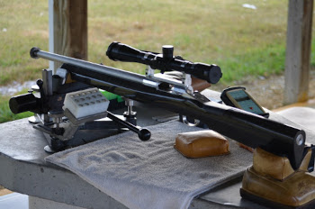
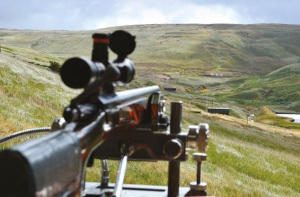
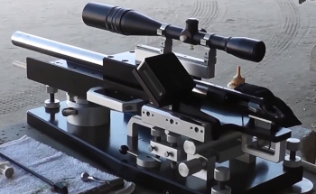
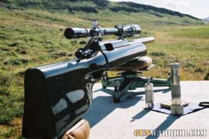

Benchrest shooting

Benchrest shooting is a shooting sport discipline in which high-precision rifles are shot at paper targets.
The rifles ride on a front and rear rest sitting on a table or bench, hence the name "benchrest". The shooter simply sits at the bench,
in distinction to other shooting disciplines, where the shooter holds and aims the rifle without the benefit of a rest.
The post-Civil War era "double rest" rifles were one early form of "benchrest" rifles.
Wikipedia.


Benchrest shooting is the pinnacle of accuracy and precision, where near perfection is achievable, and consistency
is the key. The best shooters in this exhilarating sport are lifelong students. Nothing can adequately describe the
excitement, challenge and camaraderie in this sport we call Benchrest. Most regrettably, our Benchrest sport is now
having to endure the results of the lack of our promotion and visibility outside of our sport, towards nurturing
new Benchrest Group, Score and Long Range shooter/members. Succinctly and respectfully, we have done a great job of
hiding our sport outside our own respective organization.
There are two major types of competition. The goal of the original benchrest shooting was to shoot 5 or 10 bullets into
the smallest group possible (all in one hole). Winning placement in competition is determined by how well each competitor
achieves this goal or in other words, how closely the shots are grouped. This is termed "Group Shooting".
The other is a more recent development, "Score Shooting". The difference is that the traditional bulls eye type target is
used, with scoring rings are used. Winning placement is determined by each shooter's score results. This is termed
"Score Shooting".However, in 550 and 910 metres (600 and 1,000 yd) competitions (IBS, NBRSA[1], and The Original
Pennsylvania 1,000 Yard Benchrest Club), the competitor's target is scored for both group size and score. A competitor may
only win in one category. If, for example a single competitor has the smallest group and highest score, they will be awarded
only a win for the smallest group, the next highest score will be awarded the score win.
Additionally, there is growing interest in both rimfire and airgun benchrest. Currently, both of these competitions are
of the score format only.
